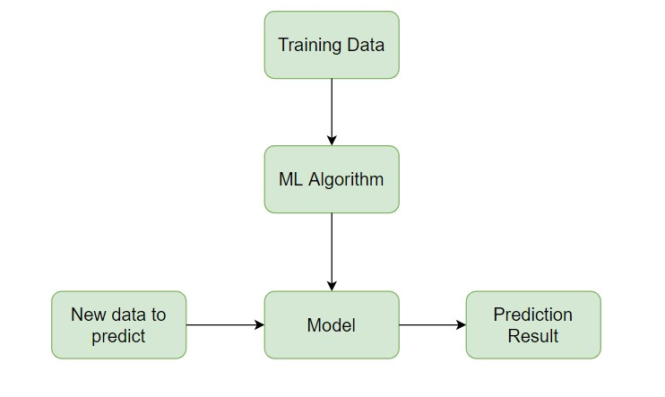
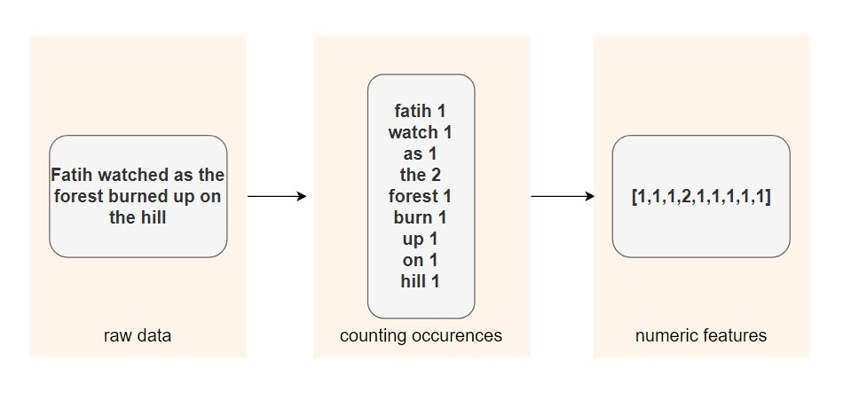
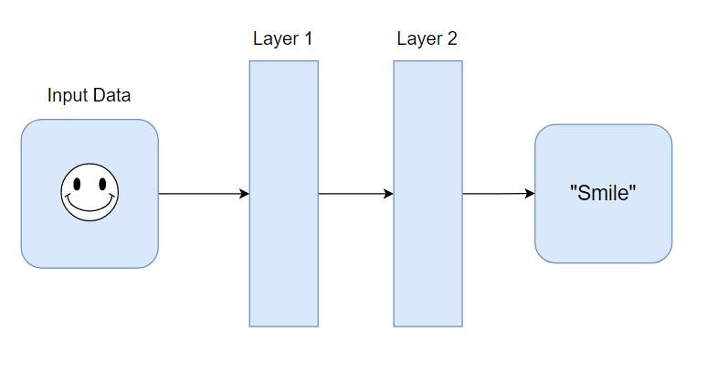
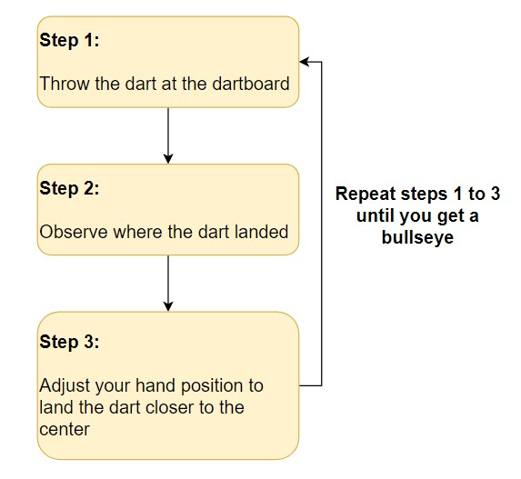
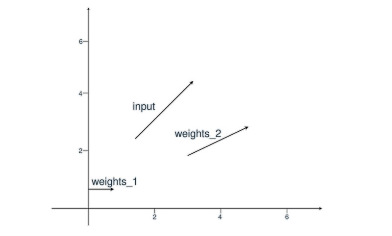
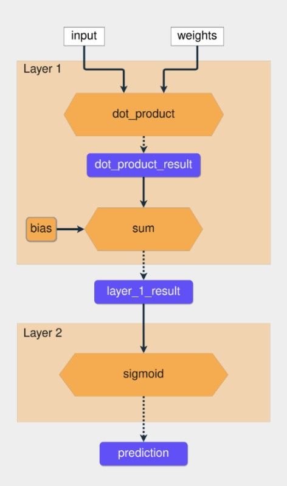
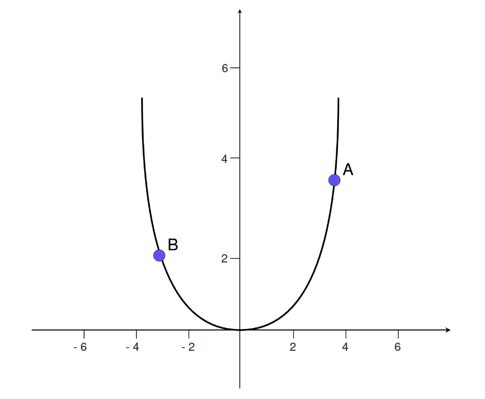
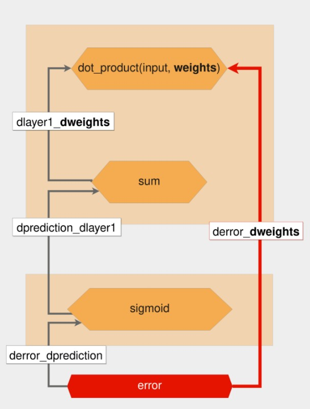
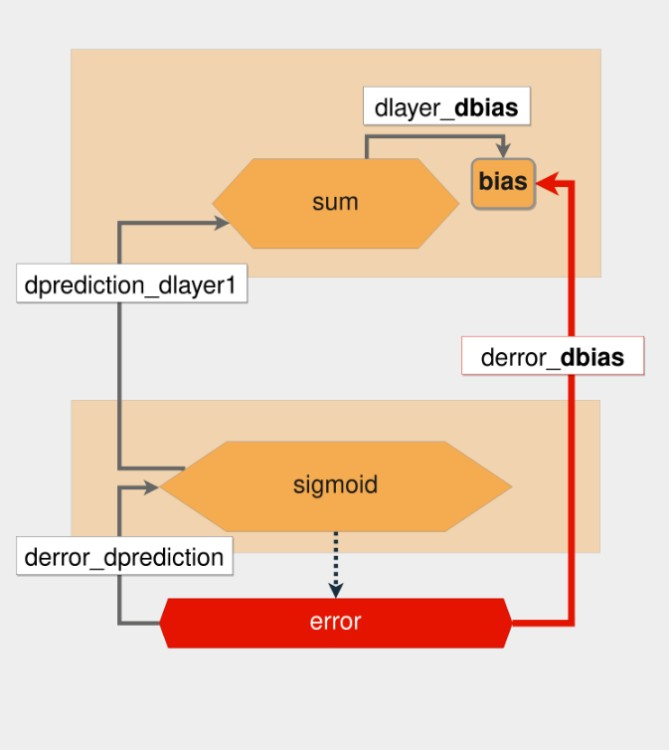
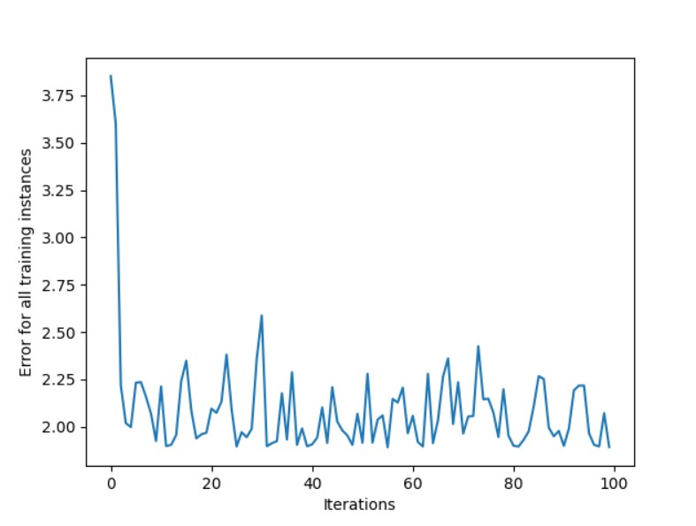

Eğer yapay zeka (AI) dünyasına adım atmaya yeni karar verdiyseniz, Python dili bu yolculuk için mükemmel bir başlangıç noktasıdır. Python, yapay zeka alanında kullanılan çoğu aracın temelini oluşturur. Derin öğrenme, verileri kullanarak tahminler yapma süreci için kullanılan önemli bir tekniktir ve esas olarak sinir ağlarına dayanır. Bu makalede, bir sinir ağının sıfırdan nasıl oluşturulacağına dair bir rehber sunmayı amaçlamaktayım.
Bir üretim ortamında, genellikle TensorFlow veya PyTorch gibi gelişmiş derin öğrenme çerçevelerinden birini tercih edersiniz. Ancak, sinir ağlarının temel çalışma prensiplerini anlamak, derin öğrenme modellerinizi daha etkili bir şekilde tasarlamanıza olanak tanır.
Bu makalede şu soruların cevaplarını arayacağız:
- Yapay Zeka nedir?
- Makine Öğrenmesi ve Derin Öğrenme nedir?
- Bir sinir ağı nasıl çalışır?
- Python ile sinir ağı nasıl yapılır?
Yapay Zekaya Genel Bakış
AI kullanmanın temel amacı, bilgisayarların insanlar gibi düşünebilmesini sağlamaktır. 1950'lerden bu yana tartışılan bu konu, teknolojinin ilerlemesiyle daha da önem kazanmıştır.
Bir Sudoku problemini çözmek üzere AI kullanarak bir Python programı geliştirmeniz gerektiğini hayal edin. Bu, koşullu ifadeler yazarak ve her konuma bir sayı yerleştirip yerleştirilemeyeceğini kontrol ederek başarılabilir. Bu süreç, bir AI uygulaması olarak kabul edilebilir; zira bilgisayarınızı bir problemi çözmek üzere programlamış olursunuz.
Makine Öğrenimi ve Derin Öğrenme, sorun çözme yaklaşımlarıdır ve her ikisi de eğitim verilerini kullanır. Bu teknikler, AI ile sorun çözme sürecinde kullanılabilir. Bu iki tekniğin farklarını sonraki bölümlerde daha detaylı inceleyeceğiz.
Makine Öğrenimi
Makine öğrenimi, bir sistemi belirli bir sorunu çözecek şekilde eğitme teknolojisidir. Sudoku örneğine dönüş yaptığımızda, makine öğrenimi kullanarak bu problemin çözümü için, çözülmüş sudoku oyunlarının verilerini toplayıp bir istatistiksel model eğitirsiniz. İstatistiksel modeller, bir fenomenin matematiksel olarak formüle edilmiş yaklaşımlarıdır.
Denetimli öğrenme, girdiler ve bilinen çıktılar olan bir veri kümesi ile model eğitimi yapmanızı gerektiren bir makine öğrenimi görevidir. Görev, bu veri setini kullanarak girdilere dayalı olarak doğru çıktıları tahmin eden bir model oluşturmaktır.
Eğitim verileri ve makine öğrenimi algoritmasının birleşimi bir model oluşturur. Bu modeli kullanarak yeni veriler için tahminler yapabilirsiniz. Denetimli öğrenme, yeni, görülmemiş veriler için tahminler yapmayı amaçlar. Bu, eğitim veri kümesinin dağılımına benzer bir olasılık dağılımını izlediği varsayımı üzerine kuruludur. Gelecekte bu dağılım değişirse, modelinizi yeni eğitim verileriyle yeniden eğitmeniz gerekebilir.
scikit-learn, denetimli ve denetimsiz öğrenme algoritmaları sunan popüler bir Python makine öğrenimi kitaplığıdır.
Denetimli öğrenme, yeni, görünmeyen veriler için doğru tahminler yapmayı amaçlar. Bu, görünmeyen verilerin eğitim veri kümesinin dağılımına benzer bir olasılık dağılımını izlediği varsayımı üzerine kuruludur. Eğer bu dağılım gelecekte değişirse, modelinizi yeni eğitim verileriyle yeniden eğitmeniz gerekir.
Özellik Mühendisliği
Farklı türde verileri girdi olarak kullandığınızda, tahmin sorunları daha karmaşık hale gelir. Sudoku problemi doğrudan sayılarla ilgilendiğiniz için nispeten basittir. Ancak, bir cümledeki duyguyu veya bir resmin bir kediyi tasvir edip etmediğini tahmin etmek isterseniz, bu durumda işler daha zorlaşır.
Giriş verilerine özellik denir ve özellik mühendisliği, ham verilerden özelliklerin çıkarılması sürecidir. Farklı veri türleriyle uğraşırken, bu verileri temsil etmenin ve onlardan anlamlı bilgiler çıkarmak için yollar bulmanız gerekir.
Özellik mühendisliği tekniğine bir örnek, lemmatizasyon olabilir. Lemmatizasyon, bir kelimenin bükülmüş formlarını tek bir öğe olarak analiz edebilmek için bir araya getirme işlemidir.
Eğer her bir kelime için diziler kullanıyorsanız, lemmatizasyon uygulayarak daha az seyrek bir matris elde edebilir ve bazı makine öğrenimi algoritmalarının performansını artırabilirsiniz.
İlk adımda, her kelimenin çekimli biçimi lemmasına indirgenir. Ardından, kelimenin cümlede kaç defa kullanıldığı hesaplanır. Sonuç, metindeki her kelimenin geçtiği sayıları içeren bir dizi olur.
Derin Öğrenme
Derin öğrenme, sinir ağının hangi özelliklerin önemli olduğunu kendisinin bulmasına izin verdiğiniz bir tekniktir. Bu, özellik mühendisliği sürecini atlayabileceğiniz anlamına gelir.
Özellik mühendisliğiyle uğraşmak gerekmez çünkü veri kümeleri karmaşıklaştıkça süreç zorlaşır. Örneğin, bir kişinin yüz ifadesinden ruh halini tahmin etmek istediğinizde, sinir ağları özellikleri kendileri öğrenebilirler. Sonraki bölümlerde sinir ağlarının nasıl çalıştıklarını daha iyi anlamak için derinlemesine inceleyeceğiz.
Sinir Ağları: Temel Kavramlar
Sinir ağı, aşağıdaki adımları izleyerek tahmin yapmayı öğrenen bir sistemdir:
- Giriş verilerinin alınması
- Tahmin yapmak
- Tahmini istenen çıktıyla karşılaştırmak
- Bir dahaki sefere daha doğru tahmin etmek için iç durumu ayarlamak
Vektörler, katmanlar ve doğrusal regresyon, sinir ağlarının yapı taşlarından bazılarıdır. Veriler vektörler olarak saklanır ve Python kullanılarak bu vektörler dizilerde saklanır. Her katman, önceki katmandan gelen verileri dönüştürür. Her katmanı bir özellik mühendisliği adımı olarak düşünebilirsiniz. Çünkü her katman daha önce gelen verilerin bazı temsillerini çıkarır.
Anlamlı bilgileri çıkarma ve derin öğrenme modelini eğitme süreci her iki senaryo için de aynıdır, ister resim ister metin verisi kullanın.
Her katman, önceki katmandan gelen verileri bazı matematiksel işlemlerle dönüştürür.
Sinir Ağını Eğitme Süreci
Bir sinir ağını eğitmek, deneme yanılma sürecine benzer. İlk deneyimlerinizde, tahmin yapma ve bu tahminleri istenen çıktılarla karşılaştırma sürecinden geçersiniz. Her denemede, daha doğru tahminler yapmak için ayarlamalar yaparsınız.
Bir dart tahtasının ortasına vurmaya çalışmanın adımları aşağıda gösterilmektedir:
Dartın nereye indiğini gözlemleyerek hataları değerlendirmeye devam ettiğinize dikkat edin. Süreç, dartı tahtanın ortasına yerleştirene kadar devam eder.
Sinir ağlarında, süreç rastgele ağırlık ve bias vektörleri ile başlar. Bir tahmin yapılır, bu tahmin istenen çıktıyla karşılaştırılır ve daha doğru tahminler yapabilmek için vektörler ayarlanır. Bu süreç, tahminlerle doğru hedefler arasındaki fark en aza indirgene kadar devam eder.
Eğitimin ne zaman durdurulacağını ve hangi doğruluk hedefine ulaşılacağını belirlemek, sinir ağlarını eğitmenin önemli bir yönüdür.
Vektörler ve Ağırlıklar
Sinir ağları ile çalışmak, vektörlerle işlem yapmayı gerektirir. Vektörler, çok boyutlu diziler olarak temsil edilir ve derin öğrenmede oldukça kullanışlıdırlar. İki vektörün iç çarpımı, yön açısından benzerliklerini ve büyüklüklerine göre ölçeklendirilmiş benzerliklerini gösterir.
Sinir ağlarında önemli vektörler, ağırlıklar (weights) ve yanılma (bias) vektörleridir. Esasen, sinir ağınızın belirli bir girişin, daha önce gördüğü diğer girişlere ne kadar benzediğini kontrol etmesi beklenir. Eğer yeni giriş, daha önce gördüklerine benzerse, çıktılar da benzer olacaktır.
Doğrusal Regresyon Modeli Nedir?
Doğrusal regresyon, bağımlı bir değişken ile bir veya daha fazla bağımsız değişken arasındaki ilişkiyi modellemek için kullanılır. Bu yöntem, değişkenler arasındaki ilişkiyi doğrusal olarak tahmin ettiğiniz bir tekniktir ve 19. yüzyıla dayanır.
Doğrusal regresyon modeli, bağımsız değişkenlerin ağırlıklı toplamını kullanarak bağımlı değişkeni modelleyebilir. Bu durumda, her bağımsız değişken, ağırlık adı verilen bir katsayı ile çarpılır. Ağırlıklar ve bağımsız değişkenlerin yanı sıra, bir de yanılma vektörü eklenir.
Örneğin, bir evin bölgesine ve yaşına bağlı olarak fiyatını tahmin etmek istediğinizi düşünün. Bu ilişkiyi modellemek için doğrusal regresyon kullanabilirsiniz:
price = (weights_area * area) + (weights_age * age) + biasBu örnekte iki ağırlık vardır: weights_area ve weights_age. Eğitim süreci, modelin doğru fiyat değerlerini tahmin edebilmesi için bu ağırlıkların ve yanılmanın ayarlanmasından oluşur.
Python ile İlk Sinir Ağınızı Oluşturmaya Başlayın
Bir sinir ağını inşa etmenin ilk adımı, giriş verilerinden bir çıktı üretmektir. Bunu yapmak için, Python ve NumPy kullanarak girişlerinizi temsil etmek iyi bir ilk adımdır.
Sinir Ağının Girdilerini NumPy ile Kullanmak
NumPy kullanarak ağın giriş vektörlerini diziler olarak temsil edeceksiniz. Ancak, NumPy kullanmadan önce, saf Python'da vektörlerle çalışarak neler olduğunu daha iyi anlamak yararlı olacaktır.
Bu ilk örnekte, bir giriş vektörünüz ve iki ağırlık vektörünüz vardır. Amaç, hangi ağırlıkların girdiye daha benzer olduğunu yön ve büyüklük açısından belirlemektir. Bu, nokta çarpımı uygulayarak yapılır.

İlk olarak, giriş vektörü ve iki ağırlık vektörü tanımlarsınız. Sonra, input_vector ve weights_1 arasındaki benzerliği hesaplarsınız. Bunu, iki dizinin nokta çarpımını uygulayarak gerçekleştirirsiniz:
In [1]: input_vector = [1.72, 1.23]
In [2]: weights_1 = [1.26, 0]
In [3]: weights_2 = [2.17, 0.32]
In [4]: # input_vector ve weights_1 arasındaki nokta çarpımının hesaplanması
In [5]: first_indexes_mult = input_vector[0] * weights_1[0]
In [6]: second_indexes_mult = input_vector[1] * weights_1[1]
In [7]: dot_product_1 = first_indexes_mult + second_indexes_mult
In [8]: print(f"The dot product is: {dot_product_1}")
Out[8]: The dot product is: 2.1672Nokta çarpımı 2.1672 olarak hesaplandı. NumPy np.dot() fonksiyonunu kullanarak aynı işlemi daha kolay bir şekilde yapabilirsiniz:
In [9]: import numpy as np
In [10]: dot_product_1 = np.dot(input_vector, weights_1)
In [11]: print(f"The dot product is: {dot_product_1}")
Out[11]: The dot product is: 2.1672Şimdi, input_vector ve weights_2 arasındaki nokta çarpımını hesaplayalım:
In [10]: dot_product_2 = np.dot(input_vector, weights_2)
In [11]: print(f"The dot product is: {dot_product_2}")
Out[11]: The dot product is: 4.1259Bu sefer sonuç 4.1259'dur. Dot product'ı, vektör koordinatları arasındaki benzerlik ölçümü olarak düşünebilirsiniz, burada çarpım sonucu 0 ise, koordinatlar benzer değildir; ancak 0'dan farklı bir değerse, koordinatlar benzerdir.
Bu prensip, dot product'ı vektörler arasındaki basit bir benzerlik ölçümü olarak değerlendirmenize olanak tanır. Örneğe geri döndüğümüzde, input_vector ve weights_2 arasındaki iç çarpımın 4.1259 olduğunu ve bu değerin 2.1672'den büyük olduğunu görebiliriz, bu da input_vector'ün weights_2'ye daha benzer olduğu anlamına gelir. Aynı mantığı sinir ağınızda da uygulayacaksınız.
Bu makalede, yalnızca iki olası sonucu olan tahminler yapacak bir model eğitmeye çalışacağız. Çıktı sonucu 0 veya 1 olabilir. Bu, girdiler ve bilinen hedeflerle bir veri kümesine sahip olduğunuz denetimli öğrenme problemlerinin bir alt kümesi olan bir sınıflandırma problemidir.
| Girdi Vektörü | Hedef |
|---|---|
| [1.66, 1.56] | 1 |
| [2, 1.5] | 0 |
Gerçek üretim senaryolarında veriler genellikle resimler veya metin gibi dosyalar halinde sunulur, bu basit sayısal veri setleri yaygın değildir.
İlk Tahmininiz
İlk sinir ağınız olduğundan, işleri basit tutacak ve yalnızca iki katmanlı bir ağ oluşturacaksınız. Şimdiye kadar gördüğünüz üzere, sinir ağında kullanılan iki işlem dot product ve toplam işlemidir ve her ikisi de doğrusal işlemlerdir.
Yalnızca doğrusal işlemler kullanarak daha fazla katman eklerseniz, her katman önceki katmanın girdisiyle her zaman belirli bir korelasyona sahip olacağından, birden çok katmana sahip bir ağ, her zaman aynı sonuçları öngören daha az katmana sahip bir ağ gibi olacaktır.
Amacınız, orta katmanların bazen bir girdi ile ilişkilendirilmesini ve bazen de ilişkilendirilmemesini sağlayacak bir işlem bulmaktır. Doğrusal olmayan fonksiyonları kullanarak bu davranışı elde edebilirsiniz. Bu fonksiyonlara aktivasyon fonksiyonları denir.
Oluşturduğunuz ağ, sigmoid aktivasyon fonksiyonunu kullanacaktır. Veri kümesindeki olası iki çıktı 0 ve 1'dir ve sigmoid işlevi, çıktıyı 0 ile 1 arasındaki bir aralıkta sınırlar.
Şimdi, tüm bu bilgileri koda dönüştürme zamanı:
In [12]: # Vektörleri NumPy dizilerinde sarma
In [13]: input_vector = np.array([1.66, 1.56])
In [14]: weights_1 = np.array([1.45, -0.66])
In [15]: bias = np.array([0.0])
In [16]: def sigmoid(x):
...: return 1 / (1 + np.exp(-x))
In [17]: def make_prediction(input_vector, weights, bias):
...: layer_1 = np.dot(input_vector, weights) + bias
...: layer_2 = sigmoid(layer_1)
...: return layer_2
In [18]: prediction = make_prediction(input_vector, weights_1, bias)
In [19]: print(f"The prediction result is: {prediction}")
Out[19]: The prediction result is: [0.7985731]Ham tahmin sonucu 0,79'dur ve 0,5'ten büyüktür, dolayısıyla çıktı 1'dir. Şimdi başka bir giriş vektörü deneyin:
In [20]: # input_vector değerini değiştirme
In [21]: input_vector = np.array([2, 1.5])
In [22]: prediction = make_prediction(input_vector, weights_1, bias)
In [23]: print(f"The prediction result is: {prediction}")
Out[23]: The prediction result is: [0.87101915]Bu sefer, tahmin yanlıştır çünkü bu girdi için hedef 0 olmalıdır, fakat ham sonuç 0,87'dir. Yanlış bir tahmin yapıldı, ancak bu hatanın büyüklüğü nedir? Bir sonraki adım, bu değerlendirmeyi nasıl yapacağınızı bulmaktır.
İlk Sinir Ağınızı Eğitin
Sinir ağını eğitme sürecinde, öncelikle hatayı değerlendirmeli ve ağırlıkları (weights) buna göre ayarlamalısınız. Bu ayarlamaları yapmak için gradyan iniş ve geri yayılım algoritmalarını kullanacaksınız. Gradyan inişi, parametreleri güncellemek ve optimizasyon yönünü ve hızını bulmak için uygulanır.
Ağda herhangi bir değişiklik yapmadan önce, hatayı nasıl hesaplayacağınızı öğrenmelisiniz. Bu açından bir sonraki alt başlık oldukça önemlidir.
Tahmin Hatasının Hesaplanması
Hatanın büyüklüğünü anlamak için, onu ölçebileceğiniz bir yöntem seçmelisiniz. Bu amaçla kullanılan işleve maliyet işlevi veya kayıp işlevi denir. Bunun için ortalama karesel hata (MSE) hakkında fikir sahibi olmakta fayda var. Bunu maliyet fonksiyonu olarak kullanacağız.
MSE'yi iki adımda hesaplayabilirsiniz:
- Tahmin ve hedef arasındaki farkı hesaplayın.
- Sonucu kendisiyle çarpın.
MSE, tahminin doğru sonuçtan ne kadar sapma gösterdiğinin karesel bir ölçüsüdür, bu nedenle her zaman pozitif bir değer elde edersiniz.
In [25]: mse = np.square(prediction - target)
In [26]: print(f"Prediction: {prediction}; Error: {mse}")
Out[26]: Prediction: [0.87101915]; Error: [0.7586743596667225]Hatanın 0.75 olduğunu gördüğünüz örnekte, daha büyük hataların daha büyük etkilere sahip olduğunu ve küçük hataların etkisinin azaldığını unutmayın.
Hatayı Nasıl Azaltacağız?
Amacınız, hataları azaltabilmek için ağırlıkları (weights) ve yanılma terimini (bias) değiştirmektir. Bu süreci anlamak için, başlangıçta sadece ağırlıklara odaklanacağız. İlk olarak, doğrusal olmayan bir fonksiyon kullanmadan yalnızca layer_1 sonucunu ele alacağız ve nasıl hataları azaltabileceğinizi bulacağız.
MSE, error = np.square(prediction - target) olarak hesaplanır. Bu ifadeyi, x = (prediction - target) olarak düşünürseniz, MSE'nin x'in karesi olduğunu görebilirsiniz, bu da ikinci dereceden bir fonksiyondur.
Yukarıdaki grafik, hatanın y ekseninde nasıl değiştiğini gösterir. Eğer A noktasındaysanız ve hatayı azaltmak istiyorsanız, x değerini azaltmanız gerekir. B noktasındaysanız, x değerini artırmanız gerekir. Türev, hangi yöne gitmeniz gerektiğini belirlemenize yardımcı olur.
Türev, modelin parametrelerinin nasıl değişeceğini açıklar. Gradyan inişi, ağ parametrelerini uygun yönde güncellemek için kullanılan yöntemin adıdır.
Unutmayın, error = np.square(x) olduğunda, türev 2*x olur. Bu, hatanın, tahmin ile hedef arasındaki farka göre nasıl değiştiğini gösterir ve ağırlıkları nasıl güncellemeniz gerektiği konusunda size yönlendirme sağlar.
In [27]: derivative = 2 * (prediction - target)
In [28]: print(f"The derivative is {derivative}")
Out[28]: The derivative is: [1.7420383]Sonuç pozitif olduğundan, ağırlıkları azaltmanız gerekir. Ağırlıkları uygun şekilde güncelleyerek ve ardından tahminin nasıl etkilendiğini görmek için tahmin işlemi tekrar yaparak, ağınızın performansını geliştirebilirsiniz.
In [29]: # Updating the weights
In [30]: weights_1 = weights_1 - derivative
In [31]: prediction = make_prediction(input_vector, weights_1, bias)
In [32]: error = (prediction - target) ** 2
In [33]: print(f"Prediction: {prediction}; Error: {error}")
Out[33]: Prediction: [0.01496248]; Error: [0.00022388]Hata neredeyse sıfıra düştü, bu iyi bir gelişme. Türev sonucu bu örnekte küçüktü, ancak bazı durumlarda türev sonuçları çok yüksek olabilir. Yüksek türev sonuçları ideal değildir çünkü doğrudan hedeflenen sonuca ulaşamazsınız, bu da sıfıra yaklaşmanızı engeller. Bu sorunu çözmek için, türev sonucunun bir kısmıyla ağırlıkları güncellemek gerekir.
Ağırlıkları güncellerken ve bir oran belirlerken, genellikle öğrenme hızı olarak adlandırılan alfa parametresi kullanılır. Öğrenme oranını azaltırsanız, yapılan güncellemeler daha küçük olur; artırırsanız, adımlar daha büyük olur. En uygun öğrenme oranının ne olduğunu bulmak genellikle tahmin ve deneme yoluyla yapılır.
Not: Yaygın kullanılan öğrenme oranı değerleri 0.1, 0.01 ve 0.001'dir.
Eğer yeni ağırlıklarla bir tahmin yaparsanız ve yanlış bir tahmin yaptığınızı görürseniz, bu, sinir ağınızın eğitim veri setindeki her örneği doğru bir şekilde tahmin edebiliyorsa, modelinizin verilerdeki özellikleri öğrenmek yerine örnekleri ezberlemiş olabileceğini, yani aşırı uyuma girdiğini gösterir.
Stokastik gradyan inişi ve düzenleme gibi teknikler, aşırı uyumu önlemek için kullanılabilir. Bu yazıda, çevrimiçi stokastik gradyan iniş yöntemini kullanacaksınız.
Artık hata nasıl hesaplanır ve ağırlıklar buna göre nasıl ayarlanır biliyorsunuz, sinir ağınızı geliştirmeye devam etme zamanı.
Zincir Kuralı
Sinir ağınızda hem ağırlıkları hem de bias vektörlerini güncellemeniz gerekiyor. Kullanılan hata fonksiyonu, ağırlıklar ve bias olmak üzere iki bağımsız değişkene bağlıdır. Bu bağımsız değişkenleri değiştirerek ve ayarlayarak istenilen sonuca ulaşabilirsiniz.
Oluşturduğunuz ağ iki katmandan oluşuyor ve her katmanın kendi fonksiyonları olduğu için, bir işlev bileşimi ile uğraşıyorsunuz. Bu, hata fonksiyonunun hala np.square(x) olduğu, ancak x'in şimdi başka bir fonksiyonun sonucu olduğu anlamına gelir.
Ağırlıkları ve bias'ı nasıl değiştireceğinizi öğrenmek istiyorsunuz. Türevleri kullanarak bunu yapabileceğinizi gördünüz, ancak şimdi, sadece toplama içeren bir fonksiyon yerine, sonucunu başka fonksiyonlar kullanarak üreten bir fonksiyonla uğraşıyorsunuz.
Fonksiyon bileşimine sahip olduğunuz için, parametrelerle ilgili hatanın türevini almak amacıyla, zincir kuralını kullanmanız gerekiyor. Zincir kuralı ile her fonksiyonun kısmi türevlerini alır ve bunları değerlendirerek istenen türevi elde etmek için tüm kısmi türevleri çarparsınız.
Şimdi ağırlıkları güncelleyebilirsiniz. Hatayı azaltmak için ağırlıkları nasıl değiştireceğinizi bilmek istiyorsunuz. Bu, hatanın ağırlıklara göre türevini hesaplamanız gerektiği anlamına gelir. Hata, farklı fonksiyonları birleştirerek hesaplandığı için, bu fonksiyonların kısmi türevlerini almanız gerekmektedir.
Ağırlıklara göre hatanın türevini bulmak için zincir kuralını nasıl uyguladığınızın görsel temsili aşağıdadır:
Kalın kırmızı ok, istenen türevi gösterir. Kırmızı altıgenden başlayarak, bir tahmin yapmanın ve her fonksiyonda kısmi türevleri hesaplamanın tersini izleyersiniz.
Yukarıdaki resimde, her bir fonksiyon sarı altıgenlerle ve kısmi türevler sol taraftaki gri oklarla temsil edilir. Zincir kuralı uygulandığında, derror_dweights'ın değeri aşağıdaki gibidir:
derror_dweights = (
derror_dprediction * dprediction_dlayer1 * dlayer1_dweights
)Türevi hesaplarken, kırmızı altıgenden weights bulunan en üstteki altıgene giden yoldaki tüm kısmi türevleri çarparsınız.
y = f(x) fonksiyonundan hareket ederek, f'nin x'e göre türevi olduğunu söyleyebilirsiniz. Bu terminolojiyi kullanarak, derror_dprediction için, hatayı tahmin değerine göre hesaplayan fonksiyonun türevini bilmek istersiniz.
Bu ters yola geri yayılım adı verilir. Her geri geçişte, her fonksiyonun kısmi türevlerini hesaplarsınız, değişkenleri değerleriyle değiştirirsiniz ve en sonunda her şeyi çarparsınız.
"Kısmi türevleri al, değerlendir ve çarp" işlemi, zincir kuralını nasıl uyguladığınızdır. Sinir ağı parametrelerini güncelleyen bu algoritmaya geri yayılım denir.
Geri Yayılım Parametleri
Bu bölümde, bias'ı nasıl güncellediğinizden başlayarak geri yayılım sürecini adım adım inceleyeceğiz. Bias'a göre, hata fonksiyonunun türevini almakla başlarsınız, sonra geriye doğru giderek bias değişkenine ulaşana kadar kısmi türevleri alırsınız.
Sondan başlayarak geriye doğru gittiğiniz için, önce tahmine göre hatanın kısmi türevini almanız gerekmektedir.
Hatanın kaynağı olan fonksiyon bir kare fonksiyonudur ve daha önce gördüğünüz gibi bu fonksiyonun türevi 2*x'tir. İlk kısmi türevi (derror_dprediction) uyguladınız ve yine de bias'a ulaşamadınız. Bu yüzden bir adım daha geri atmanız ve önceki katman olan dprediction_dlayer1 ile ilgili tahminin türevini almanız gerekiyor.
Tahmin, Sigmoid işlevinin sonucudur. Sigmoid(x) ve 1 - sigmoid(x)'i çarparak sigmoid fonksiyonunun türevini alabilirsiniz. Bu türev formülü, zaten hesaplanmış olan sigmoid sonucunu kullanarak türevi hesaplamak için çok kullanışlıdır. Sonra bu kısmi türevi alırsınız ve geriye doğru gitmeye devam edersiniz.
Şimdi, bias ile ilgili olarak layer_1'in türevini alacaksınız. Bias değişkeni bağımsız bir değişkendir, dolayısıyla güç kuralını uyguladıktan sonraki sonuç 1'dir. Artık bu geriye doğru geçişi tamamladığınıza göre, her şeyi bir araya getirerek derror_dbias'ı hesaplayabilirsiniz:
In [36]: def sigmoid_deriv(x):
...: return sigmoid(x) * (1-sigmoid(x))
In [37]: derror_dprediction = 2 * (prediction - target)
In [38]: layer_1 = np.dot(input_vector, weights_1) + bias
In [39]: dprediction_dlayer1 = sigmoid_deriv(layer_1)
In [40]: dlayer1_dbias = 1
In [41]: derror_dbias = (
...: derror_dprediction * dprediction_dlayer1 * dlayer1_dbias
...: )Ağırlıkları güncellemek için aynı süreci izlersiniz, geriye doğru giderek ağırlık değişkenine ulaşana kadar kısmi türevleri alırsınız. Bazı kısmi türevleri zaten hesapladığınız için, sadece dlayer1_dweights'i hesaplamanız gerekir. Nokta çarpımının türevi, ilk vektörün ikinci vektörle çarpımı, artı ikinci vektörün türevinin ilk vektörle çarpımıdır.
Sinir Ağı Sınıfının Oluşturulması
Artık hem ağırlıkları hem de bias'ı güncellemek için ifadeleri nasıl yazacağınızı biliyorsunuz. Sinir ağınız için bir sınıf oluşturma zamanı. Sınıflar, nesne yönelimli programlamanın ana yapı taşlarıdır. NeuralNetwork sınıfı, ağırlıklar ve bias için rastgele başlangıç değerleri oluşturur.
Bir NeuralNetwork nesnesinin örneğini oluştururken, learning_rate parametresini iletmeniz gerekir. Tahmin yapmak için predict() kullanacaksınız. _compute_derivatives() ve _update_parameters() yöntemleri, bu bölümde öğrendiğiniz hesaplamaları içerir.
İşte NeuralNetwork sınıfınız:
class NeuralNetwork:
def __init__(self, learning_rate):
self.weights = np.array([np.random.randn(), np.random.randn()])
self.bias = np.random.randn()
self.learning_rate = learning_rate
def _sigmoid(self, x):
return 1 / (1 + np.exp(-x))
def _sigmoid_deriv(self, x):
return self._sigmoid(x) * (1 - self._sigmoid(x))
def predict(self, input_vector):
layer_1 = np.dot(input_vector, self.weights) + self.bias
layer_2 = self._sigmoid(layer_1)
prediction = layer_2
return prediction
def _compute_gradients(self, input_vector, target):
layer_1 = np.dot(input_vector, self.weights) + self.bias
layer_2 = self._sigmoid(layer_1)
prediction = layer_2
derror_dprediction = 2 * (prediction - target)
dprediction_dlayer1 = self._sigmoid_deriv(layer_1)
dlayer1_dbias = 1
dlayer1_dweights = (0 * self.weights) + (1 * input_vector)
derror_dbias = (
derror_dprediction * dprediction_dlayer1 * dlayer1_dbias
)
derror_dweights = (
derror_dprediction * dprediction_dlayer1 * dlayer1_dweights
)
return derror_dbias, derror_dweights
def _update_parameters(self, derror_dbias, derror_dweights):
self.bias = self.bias - (derror_dbias * self.learning_rate)
self.weights = self.weights - (
derror_dweights * self.learning_rate
)Karşınızda, ilk sinir ağınızın kodu. Bir tahmin yapmak istiyorsanız, önce bir NeuralNetwork() örneği oluşturun ve ardından predict()'i çağırın:
In [42]: learning_rate = 0.1
In [43]: neural_network = NeuralNetwork(learning_rate)
In [44]: neural_network.predict(input_vector)
Out[44]: array([0.79412963])Yukarıdaki kod bir tahminde bulunur. Ancak şimdi, ağı nasıl eğiteceğinizi öğrenmeniz gerekiyor. Amaç, ağın eğitim veri kümesi üzerinde genelleştirmesini sağlamaktır. Bu, eğitim veri kümesiyle aynı olasılık dağılımını izleyen, yeni, görünmeyen verilere uyum sağlamasını istediğiniz anlamına gelir.
Ağı Daha Fazla Veri İle Eğitmek
Şimdiye kadar bir veri örneği üzerinde ağırlık ve bias ayarlamaları yaptınız, ancak asıl amaç, ağın tüm veri kümesi üzerinde genelleme yapabilmesini sağlamaktır. Stokastik gradyan inişi ise, modelin her iterasyonda rastgele seçilen bir eğitim verisi üzerinden tahmin yapmasına, hatayı hesaplamasına ve parametreleri güncellemesine dayanan bir yöntemdir.
Şimdi, NeuralNetwork sınıfınızın train() metodunu oluşturma zamanı. Her 100 iterasyonda bir, tüm veri noktaları için kümülatif hatayı kaydedeceksiniz. Çünkü iterasyon sayısı arttıkça bu metriğin nasıl değiştiğini gösteren bir grafik çizmek istiyorsunuz.
Burada, sinir ağınızın güncellenmiş train() metodu verilmiştir:
class NeuralNetwork:
def __init__(self, learning_rate):
self.weights = np.array([np.random.randn(), np.random.randn()])
self.bias = np.random.randn()
self.learning_rate = learning_rate
def train(self, input_vectors, targets, iterations):
cumulative_errors = []
for current_iteration in range(iterations):
random_data_index = np.random.randint(len(input_vectors))
input_vector = input_vectors[random_data_index]
target = targets[random_data_index]
derror_dbias, derror_dweights = self._compute_gradients(input_vector, target)
self._update_parameters(derror_dbias, derror_dweights)
if current_iteration % 100 == 0:
cumulative_error = 0
for data_instance_index in range(len(input_vectors)):
data_point = input_vectors[data_instance_index]
target = targets[data_instance_index]
prediction = self.predict(data_point)
error = np.square(prediction - target)
cumulative_error += error
cumulative_errors.append(cumulative_error)
return cumulative_errors
Yukarıdaki kodda birçok adım yer almakta, bu nedenle her bir satırı açıklama ihtiyacı hissediyorum:
- 8. Satır: Veri kümesinden rastgele bir örnek seçer.
- 14-16. Satırlar: Kısmi türevleri hesaplar ve bias ve ağırlıklar için türevleri döndürür. Daha önce tanımladığınız _compute_gradients() metodunu kullanır.
- 18. Satır: Önceki kod bloğunda tanımladığınız _update_parameters() metodunu kullanarak bias ve ağırlıkları günceller.
- 21. Satır: Geçerli iterasyon indeksinin 100'ün katı olup olmadığını kontrol eder. Bunu, her 100 iterasyonda bir, hatanın nasıl değiştiğini gözlemlemek için yapar.
- 24. Satır: Tüm veri örneklerinden geçen döngüyü başlatır.
- 28. Satır: Tahmin sonucunu hesaplar.
- 29. Satır: Her durum için hatayı (error) hesaplar.
- 31. Satır: cumulative_error değişkenini kullanarak hataların toplamını biriktirir.
- 32. Satır: Hatayı, hataları depolayan dizi olan cumulative_errors'a ekler.
Veri kümesinden rastgele bir örnek seçer, degradeleri hesaplar, ağırlıkları ve bias'ı günceller. Ayrıca, her 100 iterasyonda bir, kümülatif hatayı hesaplar ve bu sonuçları bir diziye kaydeder.
Modelinizi Jupyter Notebook ile çalıştırıyorsanız, NeuralNetwork sınıfına train() metodunu ekledikten sonra çekirdeği yeniden başlatmanız gerekebilir.
Yalnızca sekiz örneğe sahip bir veri kümesi kullanarak işleri basitleştireceksiniz. Artık train()'i çağırabilir ve Matplotlib kullanarak her iterasyon için kümülatif hatayı çizebilirsiniz:
In [45]: # NeuralNetwork sınıf kodunu buraya yapıştırın
In [46]: import matplotlib.pyplot as plt
In [47]: input_vectors = np.array([
...: [3, 1.5],
...: [2, 1],
...: [4, 1.5],
...: [3, 4],
...: [3.5, 0.5],
...: [2, 0.5],
...: [5.5, 1],
...: [1, 1],
...: ])
In [48]: targets = np.array([0, 1, 0, 1, 0, 1, 1, 0])
In [49]: learning_rate = 0.1
In [50]: neural_network = NeuralNetwork(learning_rate)
In [51]: training_error = neural_network.train(input_vectors, targets, 10000)
In [52]: plt.plot(training_error)
In [53]: plt.xlabel("Iterations")
In [54]: plt.ylabel("Error for all training instances")
In [55]: plt.savefig("cumulative_error.png")
NeuralNetwork sınıfını yeniden başlatıp, input_vectors ve hedef değerleri kullanarak train()'i çağırırsınız. 10000 kez çalıştırılması gerektiğini belirtirsiniz.
Sinir ağı modelinizin eğitim hatasını gösteren grafik:
Genel hata azalmakta, bu da istenilen bir durumdur. Grafik, IPython'u çalıştırdığınız dizinde oluşturulur. En büyük düşüşten sonra, hata bir iterasyondan diğerine hızla yukarı ve aşağı gitmeye devam eder. Bunun nedeni, veri kümesinin rastgele ve çok küçük olmasıdır. Bu nedenle sinir ağının herhangi bir özellik çıkarması zordur.
Bu metrik kullanılarak performansı değerlendirmek iyi bir fikir değildir, çünkü bunu yaparken ağın daha önce gördüğü veri örneklerini kullanıyorsunuz. Bu, modelin eğitim veri setine o kadar iyi uyduğu durumlarda, yeni verilere genelleştirilemediği durumda aşırı uyum'a yol açabilir.
Sinir Ağına Daha Fazla Katman Ekleme
Bu makaledeki veri kümesi, öğrenme amaçlı olduğundan oldukça küçük ve sınırlı tutulmuştur. Genellikle, derin öğrenme modelleri büyük miktarda veriye ihtiyaç duyar çünkü veri kümeleri daha karmaşıktır ve çok sayıda nüansa sahiptir.
Bu veri kümeleri daha karmaşık bilgilere sahip olduğundan, yalnızca bir veya iki katman kullanmak yeterli değildir. Bu nedenle derin öğrenme modellerine "derin" adı verilir; genellikle çok sayıda katmana sahiptirler.
Daha fazla katman ekleyerek ve aktivasyon fonksiyonlarını kullanarak ağın ifade gücünü artırabilir ve çok yüksek düzeyde tahminlerde bulunabilirsiniz. Bu tür tahminlere bir örnek, telefonunuzla yüzünüzün bir fotoğrafını çektiğinizde, telefonun çekilen resimde sizi tanıması ve kilidi açmasıdır.
Son Sözler
Buraya kadar geldiyseniz, NumPy kullanarak sıfırdan bir sinir ağı oluşturma konusunda aklınızda bir fikir oluşmuş demektir. Bu bilgiyle, Python'da yapay zeka dünyasının derinliklerine dalmaya hazırsınız.
Bir sinir ağını eğitme süreci, temel olarak vektörlere işlem uygulamaktan oluşur. Bu yazıda, bağımlılık olarak yalnızca NumPy kullandınız ve bunu sıfırdan yaptınız. Bu, bir üretim ortamında tavsiye edilmez çünkü tüm süreç verimsiz ve hataya açık olabilir.
Burası Hackod.